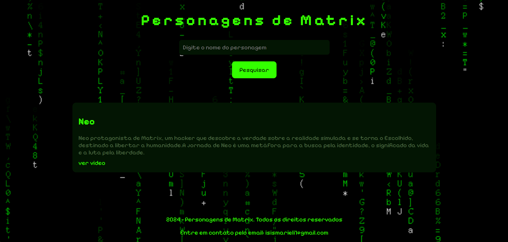

WEB MATRIX
Este projeto web é um simples buscador de personagens do universo Matrix. Ao digitar o nome de um personagem no campo de pesquisa, a aplicação busca por correspondências no título e descrição dos personagens armazenados em um banco de dados local (arquivo dados.js) e exibe os resultados relevantes, incluindo o título do personagem, uma breve descrição e um link para um vídeo relacionado.